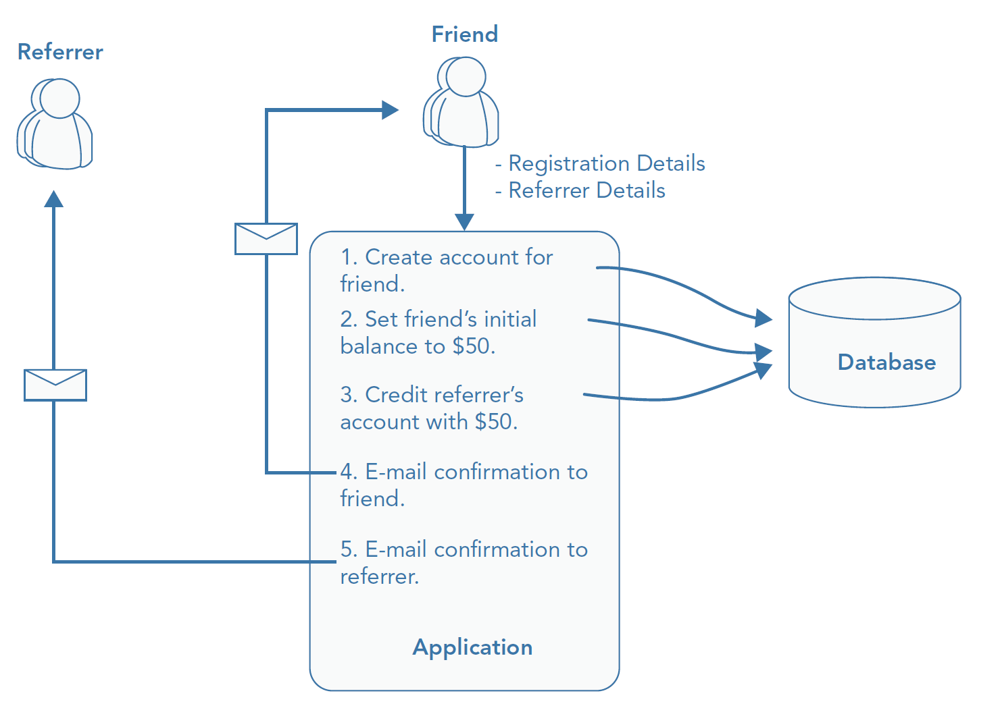

Alma Mater Studiorum - Università di Bologna
Computer Science and Engineering Department (DISI)
Domain-Driven Design
06 - CQRS Pattern
A. Croatti
Laboratory of Software Systems
A.Y. 2020/2021
CQRS Pattern for Bounded Contexts
(Command Query Responsibility Segregation)
-
CQRS separates the domain model into two models:
- a read model and a write model (sometimes called a transactional model)
-
The reason for the separation is to enable a model to serve the needs of a single context without compromise
- The two contexts in question are reporting on the state of the domain (read) and performing business tasks (write)
- …. enabling each model to be optimized to serve each context more effectively
-
Motivation: reducing bounded contexts complexity towards a better maintainability
-
CQRS is not a top‐level architecture
- it is a pattern for handling complexity that can be applied against bounded contexts needing to support a presentation model that is not aligned to the structure of the transactional model
MAINTAINING A SINGLE MODEL FOR “TWO” CONTEXTS
-
In a typical layered architecture of a bounded context, the domain model is created to enforce the invariants of the domain when handling transactional operations
- The model is composed of small aggregate groupings of domain objects built for consistency and that express the rules and logic of the domain
-
The reporting needs of an application may not be aligned with the structure of the aggregates
- application services needing to load many different aggregates to construct view models (containing a subset of the retrieved data)
-
This view generation can quickly become complex and difficult to maintain and in the very worst scenarios can slow down the system
Challenges and Issues
-
To support view generation, domain models need to expose internal state and need to be adorned with presentation properties that have little to do with the invariants of the domain
-
Repositories often contain many extra methods on the contract to support presentation needs
-
Because the read side of an application is typically used more frequently than the write side, users often seek improvements in report generation
-
To try to simplify as well as improve performance of the query side, the model is compromised
- Aggregates are merged, and lazy loading is used to prevent pulling data that is not required for transactional business task processing needs, but that is required for presentational purposes
-
This leads to a single model that is full of compromises and is sub-standard for both reading and writing.
Segregation between commands and Queries
Commands
(write)
The responsibility to fulfill business tasks, which are invoked by a client
Queries
(read)
The responsibility to fulfill reports, which are requested by a client

The Command Side (Business Tasks)

-
The command side of the architecture is concerned with upholding the rules of the domain
-
It represents the domain logic that satisfies business tasks.
Note: The architecture shown in the figure is similar to the typical layered approach but the command side does not support querying (any responses are merely acknowledgements on the success of the business task a client initiates)
[1] Explicitly Modeling Intent
-
A command is a business task, a use case of a system
- it lives within the application layer
-
Commands must be coded in the language of the business
- This is not UL: it is the language that captures the behaviors of the systems rather than the terms and concepts of the domain model
- You should model commands as verbs rather than nouns: they should capture the intent of the user explicitly
-
A command is a simple data transfer object (DTO) with simple parameter validation
public class CustomerWantsToRedeemACertificate
{
public CustomerWantsToRedeemACertificate
(Guid accountId, string certificate)
{
AccountId = accountId;
Certificate = certificate;
}
public Guid AccountId
{ get; private set; }
public string Certificate
{ get; private set; }
}
-
The command name reveals the intent of a user
-
The command represents a request for a business task to be actioned and is therefore written in the present tense as opposed to domain events, which are written in past tense
[2] A Model Free from Presentational Distractions
-
A model that serves both the presentational and the transitional needs of an application often resembles the user interfaces of that application
- The shape of aggregates is morphed from handling invariants into structures that match the user interface
-
You can avoid these issues by applying CQRS and freeing the model from any presentational requirements
- The UL will fit better around the behaviors of the application than the UI screen
- Domain experts will talk about behavior and rules, not about UI
[3] Handling a Business Request
-
A command handler is a flavor of an application service
- The handler processes the command and contains logic to orchestrate the completion of a task
- This logic can include delegation to the domain model, persistence and retrieval, and calling out to infrastructure services
-
A command handler only returns an acknowledgement of the success or failure of a command
- Because a domain model on the command side is built to implement domain rules and logic, it does not need to contain unnecessary presentational properties
- DDD aggregates support command processing rather than model real life
- Handlers can help to focus aggregates on behavior and invariants rather than on real life
public class CreateOrUpdateCategoryHandler
{
public ICommandResult Execute(CreateOrUpdateCategoryCommand command)
{
var category = new Category { CategoryId = command.CategoryId,
Name = command.Name, Description = command.Description };
if (category.CategoryId == 0) categoryRepository.Add(category);
else categoryRepository.Update(category);
unitOfWork.Commit();
return new CommandResult(true);
}
}
The Query Side (Domain Reporting)

-
The architecture of the query side is concerned with reporting on the domain
- The objects returned from the query side are simple DTO view models tailored to the specific needs of the view
-
The query side does not need to create an abstraction over the persistence store, so a repository in this context makes no sense
-
Because the read model is still within the domain layer, it is able to use domain objects from the read side
[4] Reports Mapped Directly to the Data Model
-
The read side of the architecture maps report requests modeled as view models directly to the data model,
- bypassing the command model completely
-
Views can be built within the data model for each UI screen or report If the command side does not pre-compute a required value, a domain service can be used to calculate the value on the fly
[5] Materialized Views Built from Domain Events
-
You can go further with the segregation of read and write by using a different data schema.
- You can build a read model from domain events raised from commands
- and you can then use these events to build materialized views
-
A read data model can be denormalized and optimized for querying, including precalculated data.

THE MISCONCEPTIONS OF CQRS (1/3)
- CQRS Is Hard
-
At a fundamental level, it’s an implementation of the Single Responsibility Principle (SRP) applied at the domain model layer
-
It’s useful for solving the complexity that arises when a presentational model is not in alignment with a transactional model
-
CQRS does not prescribe frameworks, multiple databases, or design patterns
- It only states that the two contexts should be handled separately for better effectiveness
- It’s a conceptual mind shift rather than a collection of complex patterns and principles that you need to adopt
-
THE MISCONCEPTIONS OF CQRS (2/3)
-
CQRS Is Eventually Consistent
-
Eventual consistency is the practice of having a read model updated out of process and asynchronously to the update of the transactional model
- This is not a prerequisite of CQRS, but it is often used to enable the read side of a model to scale
-
Eventually consistent read models add an extra layer of complexity to an application
- CQRS does not require you to be eventually consistent
-
-
Your Models Need to Be Event Sourced
- Using event sourcing is an effective method to build both the read and the write models;
- there is no prerequisite to using event sourcing or in fact domain events with CQRS
- Using event sourcing is an effective method to build both the read and the write models;
-
Commands Should Be Asynchronous
- CQRS does not insist on commands being sent in a fire‐and‐forget fashion
- For highly collaborative domains, in which multiple users are making changes to the same data, asynchronous commands make sense
- CQRS does not insist on commands being sent in a fire‐and‐forget fashion
THE MISCONCEPTIONS OF CQRS (3/3)
-
CQRS Only Works with Messaging Systems
- If you are looking to apply an eventually consistent read store or process commands asynchronously, then using a messaging framework is probably a good idea
- However, if you are not, then adding a messaging system to your application is just needless complexity
-
You Need to Use Domain Events with CQRS
- Using events to build a materialized read model is an effective method to keep your read and write models separate
- However, it is not critical, and you can use other methods of creating a materialized read store (e.g., via the memento pattern)
PATTERNS TO ENABLE an APPLICATION TO SCALE
-
CQRS enables applications to perform well under heavy load.
- Separating the read and write sides enables each to be scaled independently to meet the particular demands of the application
-
Read and write data can also be separated into stores that are best suited to their needs
- A write store that deals solely with aggregates can utilize a document database or a key-value store
- A read model can utilize a relational database or a caching store
-
To scale either side you need to understand the trade‐offs involved
- Scaling out a system isn’t simply a technical decision
- It is vital that the business understands that changes to the architecture of a system result in changes to the user experience, and such changes need to be handled carefully and be acceptable to the business
Scaling the Read Side
An Eventually Consistent Read Model
- Having an eventually consistent read store can allow to increase the availability and performance of your application
- There is a queue between the read and the write side of the architecture
- The queue contains a domain event that is raised upon a state change within the domain model
- The read side processes that domain event and updates its read store
- The read side becomes eventually consistent as it grows slightly out of sync with the write side

Use the Read Model to Consolidate Many Bounded Contexts
-
The read model can be used to consolidate views from across the enterprise to simplify report rendering
-
E.g., other bounded contexts that expose reports on the state of their domains via RESTful URLs can be consumed and used within the read store to consolidate the data required to satisfy a composite UI

Scaling the Write Side
Using Asynchronous Commands
-
A message queue can be used to store requests for business tasks
-
The application layer accepts the request from a client to perform a business task, but instead of executing the request straight away, it handles it out of process
- The application layer can only acknowledge that the request was received

The whole picture
- If you are working in a collaborative domain with heavy reads and writes, you can use an eventually consistent read model in conjunction with business tasks being handled out of the process

Commands
Application Service Patterns
for Processing Business Use Cases
Many of Domain‐Driven Design benefits arise from disciplined use of a project’s ubiquitous language (UL)
(both in conversation and in code)
A big challenge
Maintaining explicitness of domain concepts in code as you try to keep them isolated from purely technical concerns
-
A clear separation between real‐world domain concepts and purely technical concerns is highly desirable
- This separation is one of the important roles carried out by application services, which belong to the application service layer
-
The application service layer sits above the domain and is dependent upon it
- This means that a crucial responsibility of application services is to coordinate with the domain to carry out full business use cases
The role of Application Services

-
An application service has to translate inputs and outputs to protect domain structure, and it often needs to communicate with other bounded contexts
-
Understanding the difference between application logic and domain logic is crucial
- if you want to produce a model that accentuates domain concepts and isolates them from purely technical details
Application Logic
-
Application services as having two general responsibilities:
- They are responsible for infrastructural concerns
- They have to coordinate with the domain to carry out full business use cases
-
Carrying out these responsibilities correctly helps prevent domain logic from being obfuscated or incorrectly located in application services
-
Following Example will details infrastructural concerns related to the application logic
An Example - “Recommend‐a‐Friend use case”
Application‐Level Validation
-
Checking that parameters are the correct data type, the correct format, and the correct length, …
-
They aren’t business rules that domain experts care about, but they can still cause error conditions in a system
- Rather than cluttering domain logic with these technical details, you can perform this type of validation in application services
-
E.g., checking data when creating the account for the friend (nickname, email, …)
An Example - “Recommend‐a‐Friend use case”
Transactions
-
In a typical business use case there are often multiple actions that need to succeed or fail together inside a transaction
-
By managing transactions in application services, you have full control over which operations that you request of the domain will live inside the same transaction boundary
-
E.g., step 1), 2) and 3) of this example
An Example - “Recommend‐a‐Friend use case”
Error Handling and Translation
-
Not all interactions with the domain will be successful
- So, the domain will likely throw exceptions or return error codes
-
These are cases in which domain validation fails (even though application‐level validation was successful)
- An application service’s job is to handle these error conditions and translate them into suitable representations for external parties
- No external parties must be coupled to the structure of the domain errors
-
E.g., If the referrer has a debit in its balance, point 3) must be skipped
An Example - “Recommend‐a‐Friend use case”
Logging, Metrics, and Monitoring
-
Response times, errors, and other types of diagnostic information allow you to see how your application is performing and spot any potential issues at an early stage
- But capturing this information can add unnecessary clutter to your domain logic and obfuscate important concepts
-
E.g., Measuring time between friend’s recommendation and friend’s acceptation
An Example - “Recommend‐a‐Friend use case”
Authentication and Authorization
-
A common infrastructural concern that most applications are forced to deal with is authentication/authorization
-
E.g., Checking whether the user is authenticated before it applies the referral policy
An Example - “Recommend‐a‐Friend use case”
Communication
-
Events that happen inside a domain from one bounded context may trigger events that are handled by other bounded contexts
-
It is the responsibility of an application service to transmit events between bounded contexts
- This may involve publishing messages using a message bus or other kinds of communication
-
E.g., Notify referrer and friend of the recommendation process’ conclusion
Domain Logic
(from an Application Service’s Perspective)
-
A challenging activity for many DDD practitioners is drawing the line between application logic and domain logic
-
Infrastructural concerns are normally easy to identify
- … but the coordination logic that pieces together full use cases can sometimes appear to contradict the “No business rules in application services” principle
-
If the logic in the application service is actually a business rule that may be best encapsulated inside a domain service
Application Services Patterns
A variety of design patterns can be used inside application services, based on your preferences and based on context…
-
Command processor
- Using the command processor pattern, you can avoid developing large application services with many concerns
- Instead, you have a command and a processor for each use case
-
Publish/Subscribe
- A pattern for looser coupling is publish/subscribe, whereby application services subscribe to events in the domain
- You may want to consider this pattern when your domain logic is inherently event-based, especially when you pass commands into the domain but do not receive a return value